Sunday at Glastonbury kicked off in wholesome fashion in the Kidzfield, with Michael Rosen speaking to a young audience, preceded by a children’s disco party.
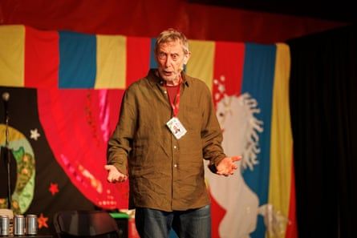Michael Rosen speaks to children about literature and language in the Kidzfield.

Monster Maker 3000 host a disco party for children in the Kidzfield Big Top tent.
For the last of the Guardian Live events, the Libertines had a chinwag with journalist Miranda Sawyer at the Astrolabe.
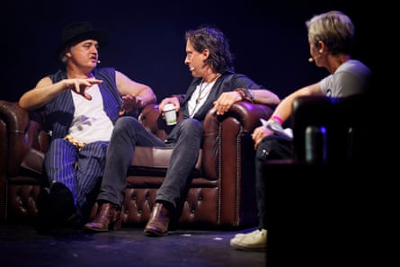Miranda Sawyer interviews Pete Doherty and Carl Barât of the Libertines for Guardian Live.
Freewheeling cellist Abel Selaocoe and his group Bantu Ensemble played at the West Holts stage. Ammar Kalia was there reviewing for our live blog: “A full-body barrage of enlivening sounds, rousing a bleary-eyed West Holts crowd to attention” was his verdict.
Irish post-punk band Sprints perform on Woodsies. Later in their set they would bring on Kate Nash as a guest.
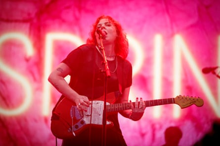Sprints play Woodsies at Glastonbury.
The Libertines, fresh from their Guardian chat, warmed up the Pyramid stage for the tea-time Rod Stewart fans taking their places.
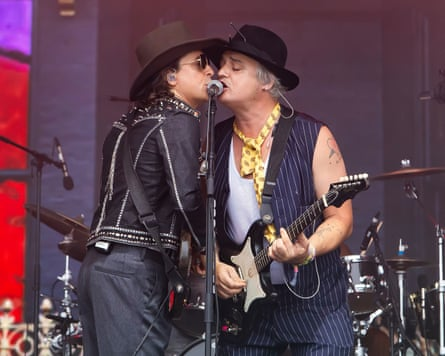Libertines on the Pyramid stage.
As the thermometer ticked up again, hardcore punk enthusiasts Turnstile started an almighty mosh pit on the Other stage.
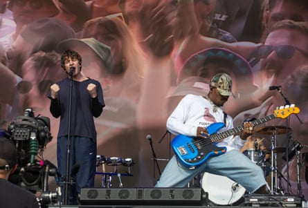Turnstile on the Other stage.
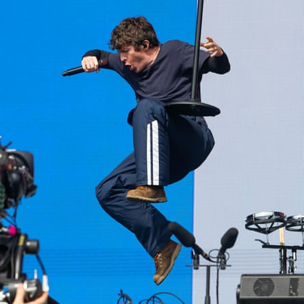Brendan Yates of Turnstile gets some air.
We met some fans at the Pyramid stage for Rod Stewart’s “legends” set singalong.
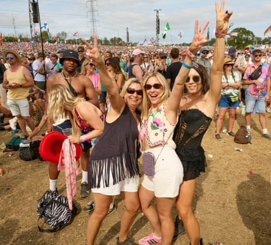Three friends pose for a picture on the hill next to the Pyramid stage while Rod Stewart plays.
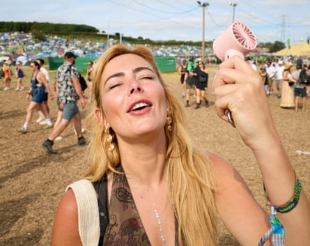Rosie from Romford cools off in the heat. Right Olivia, 23 from Liverpool.
The crowd are abuzz as they head away from the Pyramid stage following Chic’s triumphant performance .
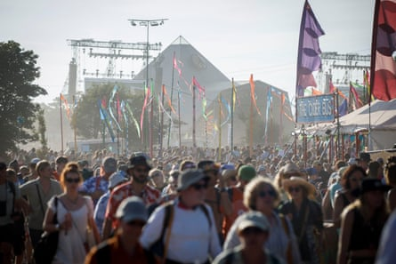Festivalgoers leave the Pyramid stage after Chic.
Prodigy served up an explosive performance to the Other stage. “For all that Glastonbury don’t do metal bands, they’ve basically got one with this hard-hitting, riff-spewing Prodigy setup,” said Ben Beaumont-Thomas on our live blog.
Maxim out front and centre for the Prodigy.
Meanwhile over at the Pyramid stage, Olivia Rodrigo closed proceedings in style, even bringing our Robert Smith for some Cure singalongs. “It feels like more of an event than any other big set this year,” was Alexis Petridis’s verdict .
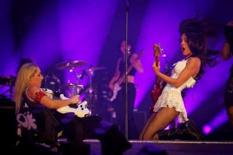Amid the power ballads and pop, Rodrigo brought no small measure of raucous rock.
Fans at the front for Olivia Rodrigo as she headlined the Pyramid Stage
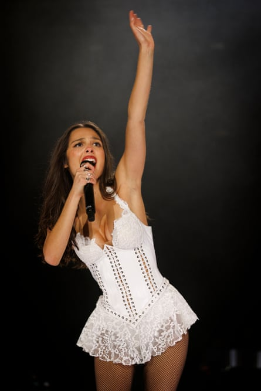After she finished, crowds dispersed in search of more music in the dance areas of Silver Hayes and South-East corner.
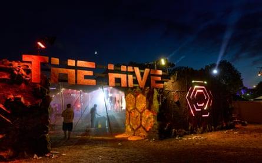The Hive in Silver Hayes.
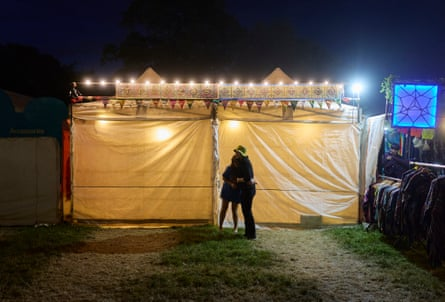Glastonbury festival late on Sunday evening.